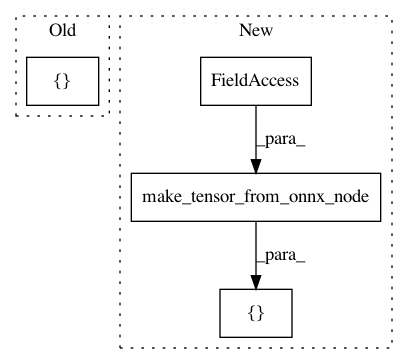

70e9729622ca975285def21caa922a65c5bb8297,onnx_tf/handlers/backend/gather_nd.py,GatherND,version_11,#Any#Any#,11
Before Change
params = kwargs["tensor_dict"][node.inputs[0]]
indices = kwargs["tensor_dict"][node.inputs[1]]
return [tf.gather_nd(params, indices)]
After Change
@classmethod
def version_11(cls, node, **kwargs):
return [cls.make_tensor_from_onnx_node(node, **kwargs)]
In pattern: SUPERPATTERN
Frequency: 4
Non-data size: 4
Instances
Project Name: onnx/onnx-tensorflow
Commit Name: 70e9729622ca975285def21caa922a65c5bb8297
Time: 2019-10-25
Author: tjingrant@gmail.com
File Name: onnx_tf/handlers/backend/gather_nd.py
Class Name: GatherND
Method Name: version_11
Project Name: onnx/onnx-tensorflow
Commit Name: 70e9729622ca975285def21caa922a65c5bb8297
Time: 2019-10-25
Author: tjingrant@gmail.com
File Name: onnx_tf/handlers/backend/scatter_nd.py
Class Name: ScatterND
Method Name: version_11
Project Name: onnx/onnx-tensorflow
Commit Name: 1d453ac8fb41ccd5591d051bc56d2899aa6f2e17
Time: 2020-01-29
Author: wtsang@us.ibm.com
File Name: onnx_tf/handlers/backend/scatter_nd.py
Class Name: ScatterND
Method Name: version_11
Project Name: onnx/onnx-tensorflow
Commit Name: 1d453ac8fb41ccd5591d051bc56d2899aa6f2e17
Time: 2020-01-29
Author: wtsang@us.ibm.com
File Name: onnx_tf/handlers/backend/gather_nd.py
Class Name: GatherND
Method Name: version_11